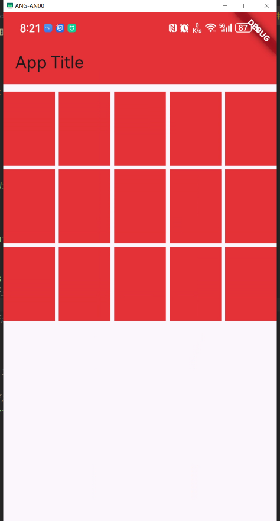

GridView.count
常用属性
-
crossAxisCount: 每一行（如果滚动方向是垂直的话）或每一列（如果滚动方向是水平的话）有多少个子组件。这是必须指定的参数。
-
childAspectRatio: 子组件宽高比，默认值为 1.0，即正方形。你可以通过调整这个值来改变子组件的大小。例如，如果你想要每个子组件宽度是高度的两倍，你可以设置
childAspectRatio: 2.0。 -
mainAxisSpacing: 设置主轴方向上子组件之间的间距。对于竖直滚动的 GridView，这将是子组件上下之间的间距；对于水平滚动的 GridView，这将是左右之间的间距。
-
crossAxisSpacing: 设置交叉轴方向上子组件之间的间距。对于竖直滚动的 GridView，这将是子组件左右之间的间距；对于水平滚动的 GridView，这将是上下之间的间距。
-
children: 包含所有子组件的列表，这些子组件将按照定义的网格布局进行排列。
-
scrollDirection: 定义了 GridView 的滚动方向，可以是
Axis.vertical或Axis.horizontal，默认是竖直滚动。 -
padding: 定义了 GridView 内边距，即网格布局与屏幕边缘的距离。
-
reverse: 如果设置为 true，则反转滚动方向。
-
primary: 确定是否应该将 GridView 作为主滚动小部件。默认情况下，当没有提供明确的滚动控制器时，它是 true。
-
physics: 定义了 GridView 的滚动行为，比如是否允许用户滚动、是否有弹性的效果等。
-
shrinkWrap: 如果设置为 true，GridView 的高度会根据子组件的内容自动调整。默认是 false，这时 GridView 会尽可能地占用多的空间。
-
controller: 可选的 ScrollController，用于控制 GridView 的滚动位置。
使用 GridView.count 创建的网格布局非常适合那些需要显示固定数量项目的情况，例如相册应用中显示图片缩略图或者商品展示页面。
示例:
import 'package:flutter/material.dart';
void main() {
runApp(
MaterialApp(
home: Scaffold(
appBar:
AppBar(title: const Text("App Title"), backgroundColor: Colors.red),
body: const MyGrid(),
),
),
);
}
class MyGrid extends StatelessWidget {
const MyGrid({super.key});
@override
Widget build(BuildContext context) {
return GridView.count(
// 控制边距
padding: const EdgeInsets.only(top: 10),
// 交叉轴方向的数量。如果是竖直滚动的，交叉轴即是x轴
crossAxisCount: 5,
// 主轴方向网格的间距，网格默认竖直方向滚动，竖直方向即是主轴
mainAxisSpacing: 5,
// 交叉轴方向网格的间距
crossAxisSpacing: 5,
// 控制网格的宽高比。 默认 1.0. 正方形
childAspectRatio: 0.7,
// 控制滚动方向，如果是水平滚动。主轴就是x轴，
scrollDirection: Axis.vertical,
children: initChild(15),
);
}
List<Widget> initChild(int n) {
List<Widget> children = [];
for (int i = 0; i < n; i++) {
Container c = Container(
decoration: const BoxDecoration(color: Colors.red),
);
children.add(c);
}
return children;
}
}
效果

联系方式: dccmmtop@foxmail.com